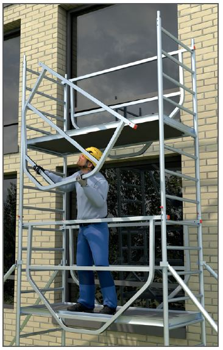
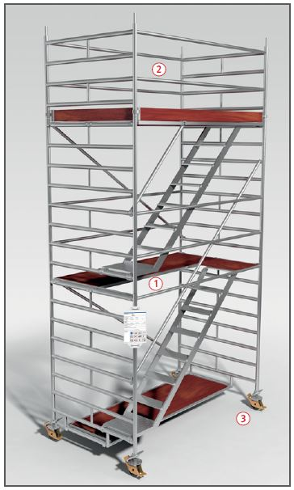

Gefährdungen
- Fehlende Sicherungsmaßnahmen
bei der Montage, unvollständiger
Aufbau oder nicht
sachgerechte Benutzung, z. B.
beim Verfahren, können zu
Absturzunfällen führen.
Schutzmaßnahmen
- Fahrbare Arbeitsbühnen dienen als Arbeitsmittel für
zeitweilige Arbeiten an hochgelegenen Arbeitsplätzen in und außerhalb von Gebäuden.
Die Belaghöhe richtet sich nach der Aufbau und Verwendungsanleitung des Herstellers und darf
- in Gebäuden maximal 12,00 m
und
- außerhalb von Gebäuden maximal 8,00 m betragen.
- Aufbauvarianten mit technischen
Schutzmaßnahmen gegen
Absturz sind zu bevorzugen.
Hierzu gehören der vorlaufende
systemintegrierte Seitenschutz
oder alternativ Montagesicherungsgeländer
(MSG). Bei den
Aufbauvarianten mit technischen
Schutzmaßnahmen gegen
Absturz ist der Seitenschutz
schon vorhanden, bevor die Erstellerin
oder der Ersteller die
nächste Belagebene betritt.
- Beachte, dass bei der Verwendung ab 1,0 m Absturzhöhe
eine Gefährdung durch Absturz vorliegt.
Aus Gerüstbauteilen errichtete
fahrbare Gerüste sind keine
fahrbaren Arbeitsbühnen und
müssen auf ihre Brauchbarkeit
geprüft und nachgewiesen
werden.

Aufbau
- Fahrbare Arbeitsbühnen nach
Aufbau- und Verwendungsanleitung des Herstellers errichten:
- Nur Bauteile eines Herstellers verwenden.
- Ausleger zur Verbreiterung der Standfläche bzw. Balastierung entsprechend Standhöhe nach Aufbau- und Verwendungsanleitung montieren.
- Fahrbare Arbeitsbühnen dürfen nur unter Aufsicht einer
fachkundigen Person auf-, ab- oder umgebaut werden.
- Die Beschäftigten müssen
fachlich geeignet und anhand
der Betriebsanweisung sowie
der Aufbau- und Verwendungsanleitung
des Herstellers speziell
für diese Arbeiten unterwiesen sein.
- Es müssen konstruktiv festgelegte Innenaufstiege
vorhanden sein
 . Diese sollten
Vorzugsweise als Treppen
ausgebildet werden. Treppen
sind gegenüber Leitern zu bevorzugen.
. Diese sollten
Vorzugsweise als Treppen
ausgebildet werden. Treppen
sind gegenüber Leitern zu bevorzugen.
- Überbrückungen zwischen
fahrbaren Arbeitsbühnen untereinander
oder Gebäuden/Bauteilen
sind in der Regel unzulässig,
es sei denn, der Hersteller
weißt in seiner Aufbau- und
Verwendungsanleitung ausdrücklich
auf diese Art der
Verwendung hin.
- Das Anbringen von Hebezeugen
ist verboten. Ausnahme: Die Aufbau- und Verwendungsanleitung lässt dieses ausdrücklich zu.
- An fahrbaren Arbeitsbühnen muss an der jeweiligen Arbeitsebene
ein dreiteiliger Seitenschutz vorhanden sein
 .
.
- Ballast ist nach den Angaben aus der Aufbau- und Verwendungsanleitung sicher anzubringen.
Hierfür sind feste Baustoffe, z. B. Stahl oder Beton, jedoch keine flüssigen oder körnigen Baustoffe zu verwenden.
Verwendung
- Zulässige Belastung beachten.
- Fahrbare Arbeitsbühnen nicht als Fanggerüste einsetzen.
- Fahrbare Arbeitsbühnen nur langsam und auf ebenem, tragfähigem und hindernisfreiem Untergrund verfahren.
- Fahrrollen müssen vor jeder Benutzung immer durch Bremshebel
festgesetzt werden .
- Jeglichen Anprall vermeiden.
- Nur in Längsrichtung oder übereck verfahren.
- Vor dem Verfahren lose Teile gegen Herabfallen sichern.
- Nicht auf Belagflächen abspringen.
- Aufenthalt von Personen
auf fahrbaren Arbeitsbühnen während des Verfahrens ist nicht zulässig.
- Bei aufkommendem Sturm und nach Beendigung der Arbeiten
fahrbare Arbeitsbühnen gegen Umsturz sichern.
Prüfungen
- Fahrbare Arbeitsbühnen sind nach der Montage und vor der
Verwendung von einer "zur Prüfung befähigten Person" zu prüfen.
- Vor Arbeitsaufnahme Inaugenscheinnahme durch eine "fachkundige Person",
insbesondere Seitenschutz und Ballastierung.
07/2021